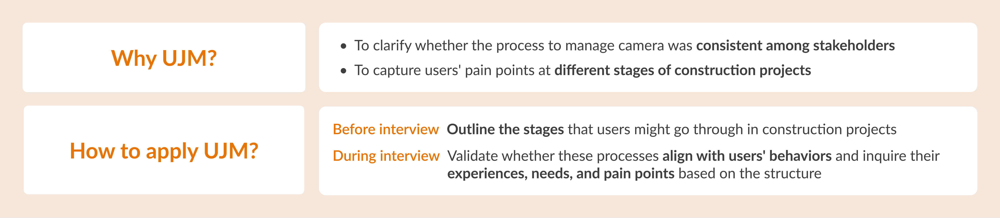
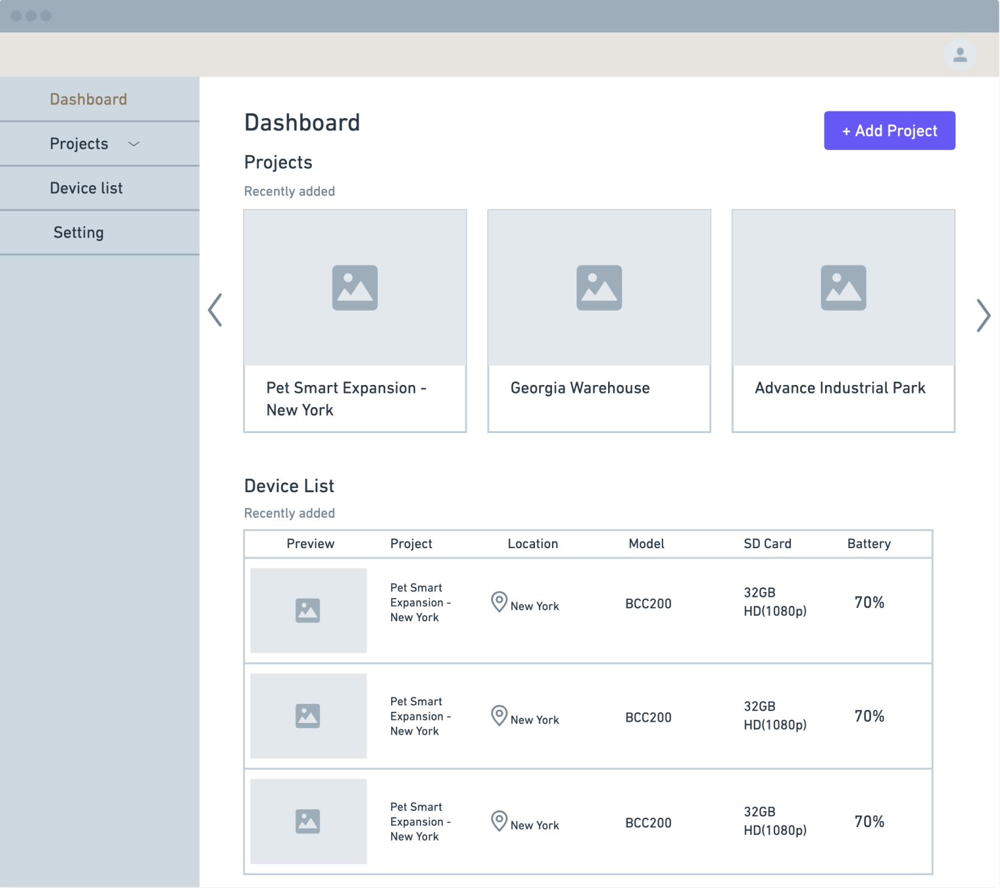
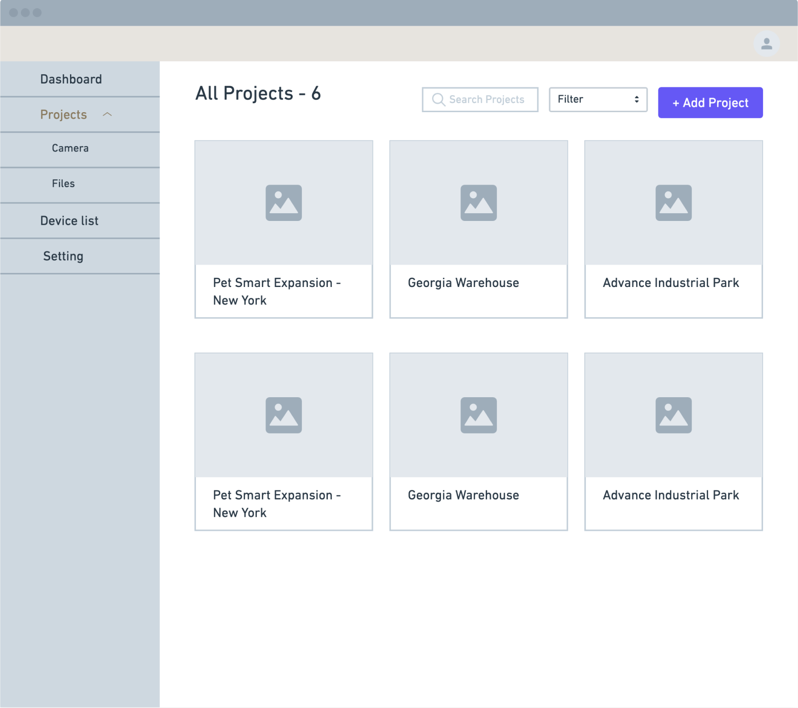

.png)
Camera management tool is a platform designed in a cooperation project hosted by Prof. Lin at National Taiwan University and the time lapse photography company Brinno. Our goal was to build a platform enabling constructors to effectively manage time-lapse cameras among multiple construction projects. Camera management tool allows constructors to control camera settings and view camera screen remotely. Moreover, they can upload and share images to their clients.
UI/UX Design Intern
Engineer * 2
Designer * 2
Figma
Miro
Oct. 2022 - June 2023
.png)
It is mandatory to set up cameras in construction projects, not only to ensure the safety of the workers but also to monitor the construction progress. However, the current methods of managing these cameras are extremely inefficient, which requires constructors to check camera screens and status on-site. Moreover, when there is a labor shortage, constructors often fail to detect and solve problems instantly, leading to captured images or videos failing to meet client demands or complying with legal regulations.
help constructors effectively manage construction cameras?
On approaching this problem, it is important to understand how constructors manage cameras and the problems they encounter during the process. We conducted interviews with 5 participants, including 3 construction company managers, 1 construction engineer and 1 freelance photographer. These interviews were structured using user journey map, and the reasoning and process are outlined below.
1. Users can only spot issues such as tilted or blocked camera screens on-site, often leading to unusable images.
"The rain causes unclear visuals, while the sun creates glare. Many scenes are unusable and are ultimately edited out."
2. Users struggle to frequently modify camera settings due to labor and time shortage.
“It's impossible to check cameras on-site every day. However, we typically visit once every one to two months.”
3. Users hope the current camera management methods can be improved to support multiple devices.
“The current camera management method focuses on single device, but it is inevitable for construction companies to handle cameras in multiple projects at the same time. The best approach is to categorize them according to various stages.”
4. Users are often worried about camera settings being motified while sharing with their clients.
“When sharing camera screens with the client, the settings can easily be altered.”
After conducting user interviews, we found that construction managers and engineers rarely take an active role in managing cameras; instead, they often delegated the task to professional photographers. This led us to shift our focus towards photographers' point of view. Creating persona enables us to thoroughly explore their needs, frustrations, and thoughts.
As I began brainstorming possible design solutions, it occurred to me that real-time cameras used for traveling or hiking and home security cameras share the same need for construction camera preview. As a result, I gathered valuable insights from my observations of Zermatt Webcam and Umbo TruePlatform.
Combining insights from research and market analysis, I revisited our persona and proposed platform feature ideas aligned with the 4 mian user needs.
After coming up with nitial ideas for the platform features, I created a storyboard to visualize the user flow before starting the design process. This helped me to understand how users interact with these features in different stages of construction projects.
I then began sketching wireframes to explore how the features would present on the platform. Here's how it works: After logging in, users are directed to the Project page, which displays all cameras in a project. They can view the camera's preview and status by clicking on a camera card. Following that, they can navigate to each camera's File page from the Camera Preview page, where they can upload and share files.

After discussing with the team, some adjustments were made. First, Dashboard and Device list page were added so that users can manage cameras both by projects and devices. Moreover, the perspective comparison feature was removed from the Camera Preview page due to technical constraints.
Dashboard
Project
Device List

Camera Preview

File

Dashboard
Project
Device List

Camera Preview

File
The site map shows the structure of the platform. The Nav bar provides access to the main pages, including Dashboard, Project, and Device list. Within each project, there are Camera, File, and Team. The header contains links to personal settings such as Profile, Settings, and Notification. I focused on the design of File, Team, Settings and Camera preview, which are highlighted in yellow.

The two most important actions on the file page are uploading and sharing images. As a result, I experimented with various designs to optimize these tasks and iterated on the UI of the page.
I initially proposed a design where users could upload files by clicking the upload button and dragging files into a pop-up screen. However, I refined the design based on the team feedback that the upload area might be too small for users uploading a large number of files at once. Hence, the second iteration, which allows users to drop files directly into the page, will be more convenient for them.
v1: Pop up window
The pop up window is more intuitive for first-time users.
The upload area is limited for users dragging a huge amount of files.
Need to wait for all the files to finish uploading before closing the window.
v2: Directly drag and drop files

More space for dropping files, and save users’ time on other tasks while uploading.
I presented two ways for users to share files. Consider that most clients access files via desktop, b would be a better choice.
a. Share with QR code
b. Share with link

Enable to scan the QR code on-site.

More convenient for desktop users.
Initially, I thought that displaying thumbnails would assist in identifying unusable images, but I soon realized that identical thumbnails made it difficult to distinguish the differences between each image. Therefore, I refined the design to emphasize more discriminative information, such as the file format.
v1: Show image preview

Confusing when disaplaying similar images at the same time.
v2: Show icons according to file formats

Simplify the interface by using icons to distinguish file formats.
The process of deciding how to handle permissions for controlling cameras in construction projects is illustrated below.
v1: Explore two ways to manage project roles
I investigated two common methods for managing permissions in a project. For the feature-based method, users can assign permissions (edit/view) to project members based on features (projects, cameras, and files). And for the role-based method, role permissions are predefined, and the owner can assign roles (member/guest) to project members. To simplify design and enhance development efficiency, we opted for the role-based method.
a. Feature-based

Enable customization.
Need to manually set up permissions for each feature.
b. Role-based

More simple and convenient.
Save time on development.
v2: Define roles and role permissions
I proceeded to set roles and their permissions with the team. We observed that there are 3 main actors in most construction projects, including a project owner having access to all project settings, project members responsible for uploading files and clients that can only access to files. Therefore, the project roles were defined according to the observation.

1. Admin
Have all permissions (include invite others to the project and delete projects)
2. Member
Able to edit, view, and share projects
3. Guest
Only view projects, cannot create, edit, delete or share with others
v3: Iterate on UI

I initially separated the two settings due to security concerns. However, during the UI design phase, I noticed that integrating the two areas was more effective in maximizing spacing without compromising on security.
v1: Seperate the two settings
v2: Combine the two settings
Following the team's suggestions, I improved the first version of design by reducing the distance between the toggle and the label to make it easier for users to identify the corresponding toggle. Moreover, the notifications are grouped according to features, saving users time in finding the specific ones they are searching for.
v1: List all notifications

v2: Group by features

Remote camera scheduling and monitoring, saving users' time on on-site setup and enabling immediate anomaly detection.


Uploading files in different formats and sharing view-only files enhance efficient communication with clients and prevent camera settings from being accidentally altered.


Managing cameras by project or device enhances the previous approach focusing on single-device management, providing a more convenient way to set up and monitor multiple devices.


Creating three permission levels for project roles improves both internal management and external communication.


The limitations and uncertainties in real-life scenarios were the greatest challenges in this project. For example, in the early stages of the project, I had a limited understanding of the construction field, and comprehensive user research was not practicable due to time and resource restrictions. Furthermore, I was uncertain whether my design proposals were practical, as the team spent a significant amount of time verifying with various stakeholders. Throughout these challenges, I learned to make assumptions based on the information at hand and then adjust them based on the team's feedback. Though these initial assumptions were ambiguous and may be radically changed, they allowed me to efficiently communicate and reach a consensus with the team.
As most of our primary users were constructors who were less familiar with technical products, I realized the significance of designing interfaces that were easy to use. Therefore, I stepped into their shoes and created straightforward interfaces that could help them quickly understand how to navigate the website.
If I knew we wouldn't be able to interview many users, I would devote more time to desk research at the beginning of the project. As the project progresses, a thorough understanding of the industry will be useful in empathizing with the users.